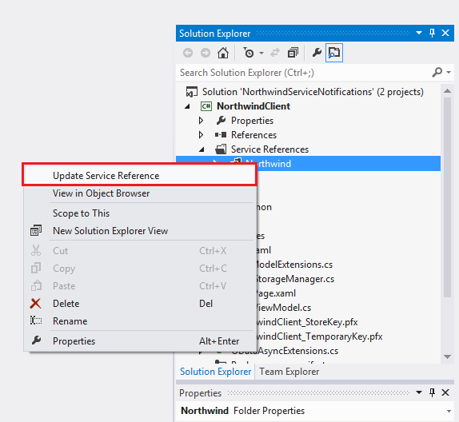
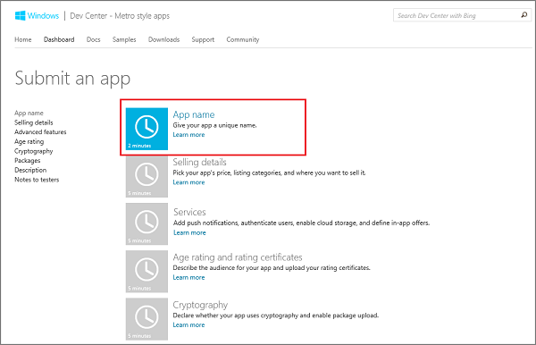
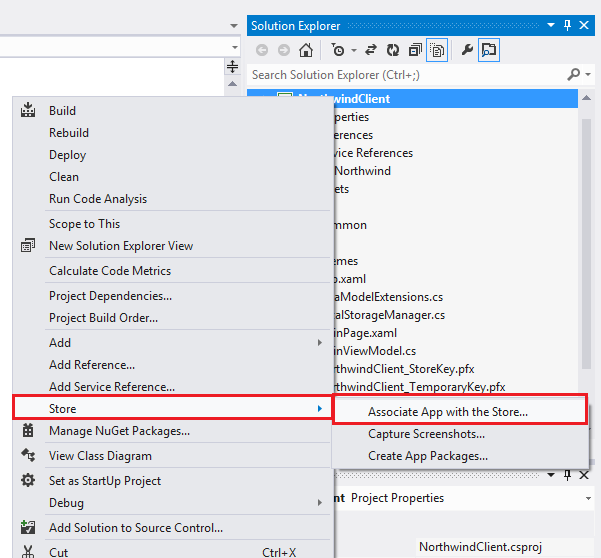
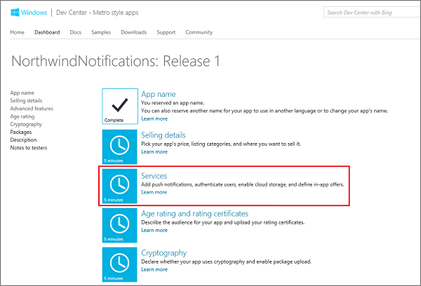
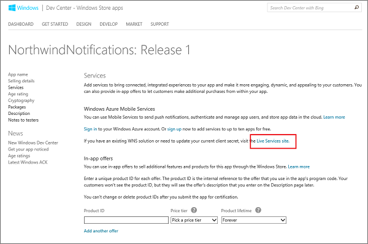
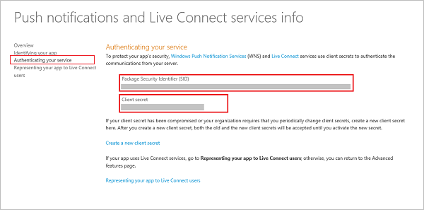
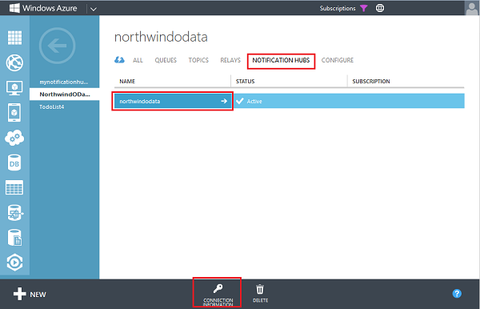
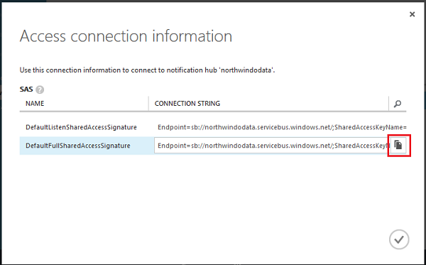
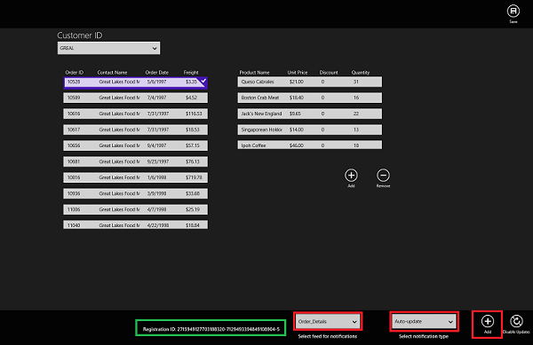
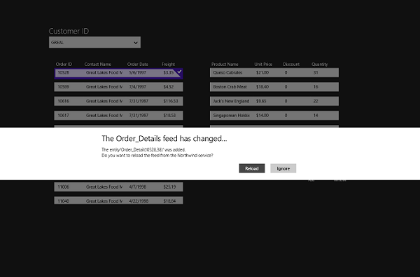

Introduction
There are three core functionalities required by cloud-connected mobile device apps: data access and storage, authentication, and push notifications. As a REST-based protocol, the Open Data Protocol (OData) is any ideal way to exchange data with mobile device
apps. However, as a data exchange protocol, it doesn't provide any built-in support for authentication or notifications. Windows Azure Notification Hubs is a Windows Azure service that enables you to send notifications to mobile apps running on all major device
platforms. This sample demonstrates how to use Notification Hubs to send notifications from an OData service to a Windows Store app. This solution contains two projects: 1) an ASP.NET application that hosts an OData feed implemented by using WCF Data Services
and 2) a Windows Store app that consumes the OData feed and registers for feed change notifications. Feed change notifications are performed by the OData service and client registration is enabled by service operations.
Notes on Version 2.1
The current version has been modified from the previous version as follows:
- Added loopback detection/delay (off by default) to prevent auto-update notifications on self-updates.
- Fixed a bug with autosync notifications that causes an exception when there was more than one change notification received.
- Fixed a bug that displayed a weird message dialog when changing orders.
- Upgraded to NuGet package manager version 2.7.41101.299.
- Upgraded to WCF Data Services 5.6.0 Tools.
Notes on Version 2.0
This version has been modified from the previous version as follows:
- Users can now choose between standard toast notifications or "auto-update" notifications for feed changes.
- Auto-update notifications are raw notifications that are sent by the OData service with enough information to enable the client to sync the feed to get the latest changes.
- When the client receives an "auto-update" notification, the user is asked if she wants to update the feed.
- The OData service supports creating both toast and raw notifications.
- The OData service sends both raw and toast notifications for every feed change.
Prerequisites
- Windows Azure account (you can get a trial account
here)
- Windows Store account (this is required to register the Windows Store app for push notifications)
- Visual Studio 2012 Professional or higher edition (running on Windows 8) that supports:
- Web application development
- Windows Store app development (this sample was tested on a Windows 8 computer)
- Local database (I think that all developer editions have this)
- IIS Express 7.5 (included in
WebMatrix)
- WCF Data Services 5.6.0 Tools
- NuGet Package Manager add-in for Visual Studio version 2.7.41101.299 or higher.
Notes:
This sample requires NuGet packages that are not included in the download. (If included, the sample download would be 20MB.) The missing packages are downloaded automatically when the project is built and when the service reference is updated.
Do not try to load the client project until you are instructed to do so. Doing so makes it very dificult to load the correct NuGet packages.
Building this project means that you accept the terms of those NuGet projects.
Configuring the Sample
You must complete the following steps to be able to run this sample on your local computer:
Get the project running on your local computer
First we need to get the project configured to run on your machine.
- Open the NorthwindServiceNotifications.sln solution file in Visual Studio 2012, and rebuild the project.
Note: the NorthwindClient is in an unloaded state—but this is by design.
- Press F5 to start the data service and verify that the service document is displayed.
This makes sure that IIS Express is running. - (Optional) Browse to the following URI and make sure that the service can load the Customers feed data from the database:
http://localhost:65472/Northwind.svc/Customers
- Stop the debugging, right-click the NorthwindClient project and click
Reload Project.
- Right-click NorthwindClient and click Set as Startup Project.
- Expand the NorthwindClient project, expand Service References, then right-click
Northwind and click Update Service Reference.

- Rebuild the entire solution.
At this point the app should run and be able to access the local OData service, but there is no notification functionality.
Associate the client app with the Windows Store
You need to create a new app in the Windows Store and associate this project with that app to be able to send notifications to the app.
-
If you have not already registered your app, navigate to the
Submit an app page in the Dev Center for Windows Store apps, log on with your Microsoft account, and then click
App name.

-
Type a name for your app in App name, click Reserve app name, and then click
Save.
Note: Don’t bother trying NorthwindNotifications—I already have it. Just append your name, if you want to make a unique name.
- In Visual Studio 2012, right-click the project in Solution Explorer, click
Store, and then click Associate App with the Store....

-
In the Associate Your App with the Windows Store wizard, log in with your Microsoft account.
-
Click the app that you registered in step 2, click Next, and then click
Associate.
-
Back in the Windows Dev Center page for your new app, click Services.

-
In the Services page, click Live Services site under
Windows Azure Mobile Services.

-
Click Authenticating your service and make a note of the values of
Client secret and Package security identifier (SID).

You will use this information in the next step to enable Notification Hubs to send push notifications to your app.
Create and configure the notification hub
Now that the Windows Store client app is configured to receive push notifications, we can use this info to register the app with Notification Hubs.
- Using the client secret and package SID from the previous step, complete the section
Configure your Notification Hub in the Getting Started with Notification Hubs tutorial.
- In the Windows Azure Management Portal, go to your new hub and in the
Dashboard, click Connection Information.

- Copy the connection string for shared access signature named DefaultFullSharedAccessSignature.

- Back in Visual Studio, in the NorthwindServiceNotifications project, open the Web.config file, locate the
AppSettings element, and replace value of the elements with
key "Microsoft.ServiceBus.ConnectionString" and
"Microsoft.ServiceBus.NotificationHubName" with the hub connection and name, respective.
- Open the Northwind.svc.cs file and uncomment the code in the public constructor, which looks like this:
C#
Edit|Remove
csharp
// Create the client in the constructor.
public Northwind()
{
// Create a new Notification Hub client using the stored info.
hubClient = NotificationHubClient
.CreateClientFromConnectionString(
ConfigurationManager.AppSettings["Microsoft.ServiceBus.ConnectionString"],
ConfigurationManager.AppSettings["Microsoft.ServiceBus.NotificationHubName"]
);
}
// Create the client in the constructor.
public Northwind()
{
// Create a new Notification Hub client using the stored info.
hubClient = NotificationHubClient
.CreateClientFromConnectionString(
ConfigurationManager.AppSettings["Microsoft.ServiceBus.ConnectionString"],
ConfigurationManager.AppSettings["Microsoft.ServiceBus.NotificationHubName"]
);
}
This code creates a new instance of the Notification Hubs client. - Rebuild the solution, then right-click the NorthwindClient project and click
Deploy.
At this point, the sample data service is able to register users for notification and send notifications in response to updates in the registered feed.
Running the Sample
Toast Notifications
- Press F5 to run the Windows Store app. Northwind sales data is displayed.
- Right-click or swipe-up to display the bottom app bar, choose Order_Details, choose
Toast, and click Add.
After successful registration, the registration ID assigned by Notification Hubs is displayed.
- Perform one or all of the following updates in the Order_Details feed:
- Select an existing item and update the item quantity.
- Click the Add button under the items list, select a product from the combo box, set the quantity of the new item.
- Select an existing item and click the Delete button.
- Right-click or swipe-down to display the top app bar and click the Save button.
This sends a change request to the data service, which in turn triggers one toast notification for each changed item in the order.
Auto-Update Notifications
- Press F5 to run the Windows Store app. Northwind sales data is displayed.
- Right-click or swipe-up to display the bottom app bar, choose Order_Details, choose
Auto-update, and click Add.

After successful registration, the registration ID assigned by Notification Hubs is displayed.
- Perform one or all of the following updates in the Order_Details feed:
- Select an existing item and update the item quantity.
- Click the Add button under the items list, select a product from the combo box, set the quantity of the new item.
- Select an existing item and click the Delete button.
- Right-click or swipe-down to display the top app bar and click the Save button.

This sends a change request to the data service, which in turn triggers one raw notification for each changed item in the order, which is processed by the client as a request to update the feed.
Note that the client only displays information about the first change and ignores the other (this was a scoping design decision).
Learn More
{kind=link}
{kind=link}
{kind=link}
{kind=link}
{kind=link}
{kind=link}
{kind=link}
{kind=link}
{kind=link}
{kind=link}